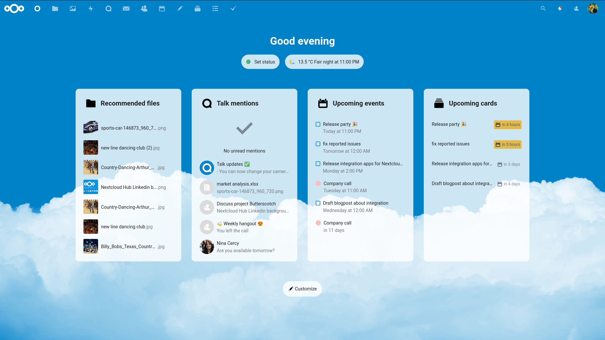
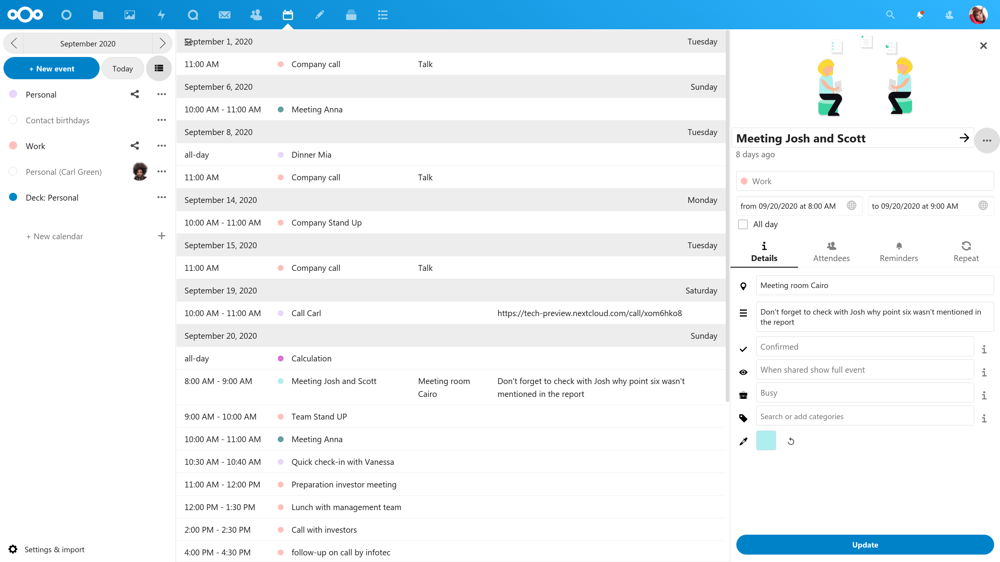
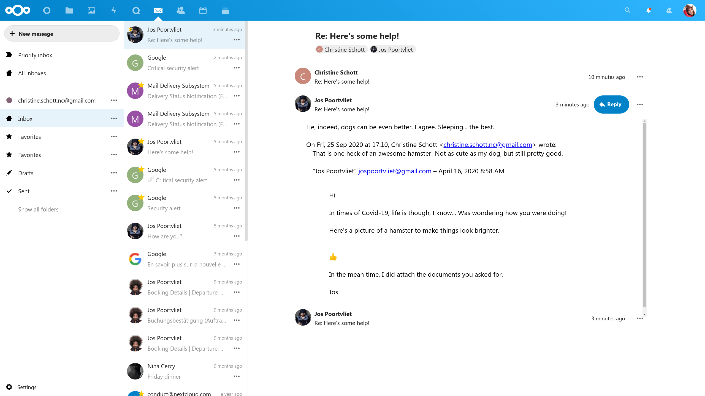
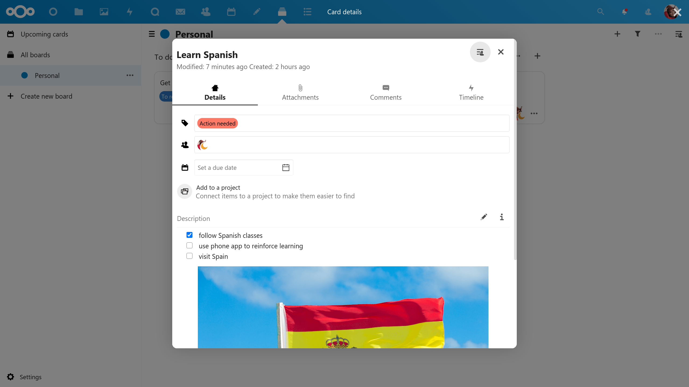
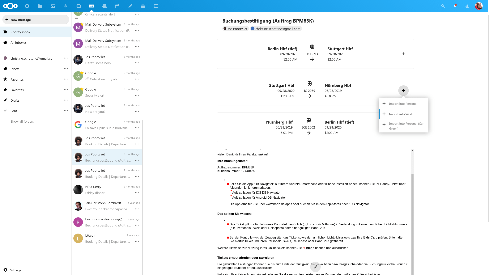
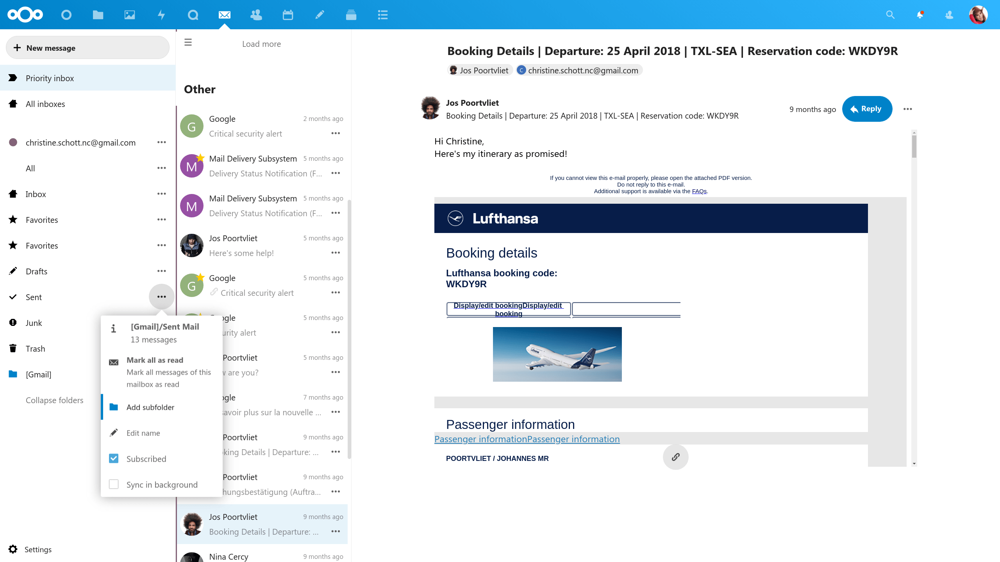

Unified widgets, global search, threaded mail, and deep calendar‑Deck integration — the self‑hosted workspace evolves.
Explore features
NextCloud 20 marks a strategic shift: integrating Talk, Mail, Deck, and external services into a unified dashboard experience.

Based on community insights, NextCloud evolved from a Dropbox-like file storage to a self-hosted collaboration platform. Version 20 (Hub) introduces a long-awaited dashboard — a central cockpit for notifications, upcoming tasks, and activity streams.
It redefines user interaction by merging calendar events, Talk mentions, and third-party widgets (GitHub, Jira, Twitter) into one glanceable interface. The result: reduced context switching and a true open-source alternative to proprietary suites.
Three pillars that guided the redesign and feature set.
Dashboard as the default entry point — show upcoming events, Talk mentions, and favorite files instantly.
Search across files, emails, contacts, external GitHub issues, and Jira tickets — all from one search bar.
Connect Slack, Mattermost, Twitter, and GitLab via Matterbridge and unified APIs — break silos.
Lightweight enough for a Raspberry Pi, powerful enough for enterprise.
Ubuntu 18.04/20.04
CentOS 7/8, Debian 10+
Apache 2.4 / Nginx
PHP 7.3 or 7.4
MariaDB 10.2+ / MySQL 5.7+
PostgreSQL 9.6+
Minimum 4 GB RAM
8 GB+ recommended for Hub features
Threaded email, smart itinerary parsing, Deck cards inside calendar, and the all‑new dashboard widgets.
NextCloud 20 replaces the classic file view with a fully customizable dashboard. Widgets show upcoming calendar events, Talk mentions, recommended files, and even weather or external project updates. Set a global status (online/away) with emoji — visible across all apps.
Dashboard: status, upcoming events, and Talk mentions integrated.
The Mail app gets a massive upgrade: conversations are now grouped in clean threads, making long email chains readable. Folder management, priority inbox, and quick filters reduce clutter. Snippet view shows sender avatars and latest reply preview.
Combined with the unified search, finding email attachments or past itineraries is seamless. Users can also favorite important folders and collapse sidebars for focus.

Conversation threading + smart folder navigation
Deck brings Trello-like boards into your private cloud. In version 20, the modal card view gets enhanced: attachments preview, detailed comments, due date pickers, and activity timeline. Perfect for personal projects like “Learn Spanish” or team sprints.

Card view with action needed, description, and timeline
Calendar gets a refreshed list view that shows rich details: meeting rooms, Talk links, attendee lists. But the highlight: Deck cards with due dates automatically appear as events. This bridges project management with your daily schedule.
Quick event creation, color-coded calendars (Personal, Work, Contact birthdays), and integrated Talk video conference links turn scheduling into collaboration.
Calendar list view: meeting details, video call links, and Deck integration
NextCloud Mail now recognizes flight and hotel booking emails. The system extracts departure dates, reservation codes, and passenger info, displaying a clean summary card right inside the mail interface. Perfect for frequent travelers and business users.
This feature reduces manual copy-pasting and integrates directly with calendar suggestions — one click to add the trip to your agenda.

Automatic itinerary card from email: departure, booking code, passenger info
Handle multiple email accounts (including Gmail, Outlook, or custom IMAP) from one interface. The Mail app now includes a refined folder tree, quick filters for unread/flagged, and a collapsible sidebar. Shown here: detailed Lufthansa booking card and priority inbox structure.
Alongside, the security alerts from Google and delivery notifications are grouped, keeping your communication clean and manageable.

Mailbox management: Lufthansa booking card + account folders
The entire NextCloud 20 experience focuses on reducing silos. Dashboard widgets, global search cards, and Deck–Calendar synergy create a cohesive environment for teams and individuals.
“This independent report shows how a cooperative can use simple digital tools to organize local farm data, secure community micro-loans, and connect members without relying on expensive outside technology.”